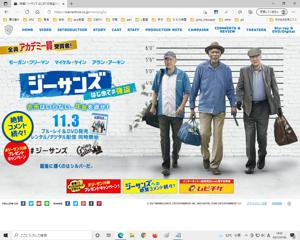
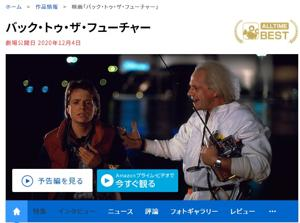
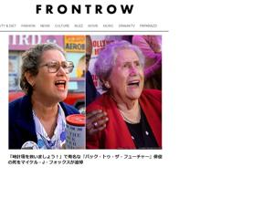

うるがいの話 ある日
最新:
変わった隣人
うるがいとは 前提知識です
カニの画像をクリックすると『うるがいの話』サイトを表示します

うるがい(ｳﾙｶﾞｲ urugai)とは、『もずくがに』の名前でとても大きくなります。

たながー（ﾀﾅｶﾞｰtanagaa）とは手長えびのことで、何種類かあり大きいのは車
エビぐらいになります。

ぶながー(bunagaa)とは、赤い髪の毛、赤い身体、そして身長は１ｍ２０ｃｍ
ぐらい、川の蟹を食べているの目撃された。場所は沖縄県国頭郡大宜味村のと
ある村僕の隣近所に住んでいる爺さんから、聞いた話です。
2021年07月06日 (火）変わった隣人
17:11



昨日夕方、ジョギングからの帰り、草木の塵日に備えて草を包んだ袋に密閉さ
さえるためか穴をあけていた近所のおじさんとすれ違う。すれ違う前に、コン
バンハと背中腰から声をかける、が、反応しない。もともとシャイな人なので
特に改めて挨拶はしなかった。この住宅の最初の人は、数年住んで居なくなっ
た。持ち主が変わったのだが、あまり、隣近所とは接触したくないようだ。ま
特に迷惑をかけているわけでもないので。ところで、道に花木を置いて道路の
通行に支障をきたしている迷惑おばさんがいる。もと公務員で、かなり前に退
職したこの人も、先ほどのおじさんと同じく一人ものである。とある日、生協
の宅配サービスの職員が、車を止めたあと家の近くで５分程携帯で話こんでな
かなか家に来ない（２階に巣ごもりしている私には、外の気配は手に取るよう
に分かる）。何かあったのかなと思っていたら、電話を終えたあと家に宅配に
きた職員から、１週間前に、迷惑おばさんの玄関の前に、宅配し置いた冷凍の
箱がそのまま、置かれているとの事。最近迷惑おばさん、見かけましたかとヨ
メは尋ねられたが、サーと答えた。宅配の職員が帰ったあと、ヨメが私に迷惑
おばさん、最近みた？と尋ねるのでさっき道を歩いてのを見たよと、答える。
その数日後、玄関先でウロウロしていたら、知らない業者の人に迷惑おばさん
最近みましたかと尋ねられ、ええ、この前みましたよと答えると、良かった、
安心しました、家から変な臭いもしますし、もしかして・・・、と思っていた
とのこと。この業者は私に名刺をくれた、包括支援センターの人で電話をいれ
ても全然取らないので心配していたらしい。その後、この話を隣の奥さんとヨ
メが会話していたら、奥さんが買い物で、迷惑おばさんの前を通ると玄関先が
匂たっらしい、第一発見者（孤独死の）にはなりたくないと思っていたとのこ
と。迷惑おばさん、痴呆があるのかなと思ったがそうでもないらしい、もとも
と偏屈な人だと奥さんは言っていた。
昨日、アマゾンプライム（画面を選択すると「お帰りなさい」と表示される。
ん？、なかなか）で映画をみる。なぜか『ジーサンズ はじめての強盗』を見
てと私の心を読んでいるかごとく、老人が活躍する物語を勧めされる。おお、
そういえばこの人、バック・トゥ・ザ・フューチャーでドクの役をした白髪の
人は亡くなったのでは、依然なにかできいたような・・、で調べた。生きてい
る！、亡くなったのは、「時計塔を救いましょう」といった女性だった。ん、
もう一人イギリスのマイケル・ケインは・・、生存している。ふむふむ、近頃
勝手あの世に人を送ってしまっている。
とこで、一生懸命活動してた県の新型コロナ専門家会議の委員が、批判を受け
て辞任することになった、変わりに活動する人は。近頃は、特定相手を攻撃す
る記事が多い、特にネットでは。事実を伝える努力をせず、記事が読まれるこ
とが使命か如く（ドラマ半径５メートルをみて勉強した？）。
「仏サッカー代表選手が日本人大差別の報道を分析。くそ野郎は誰だ！」
架空の発言で小泉進次郎氏を批判AERA dot.が謝罪「記者の聞き間違いでした